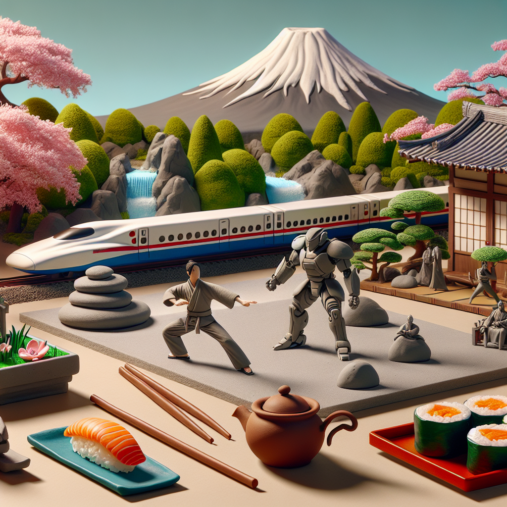

Why Japan is Friggin Awesome!
Japan is a truly amazing country. From its vibrant culture, to its delicious cuisine, there is something for everyone in Japan! I have been living here for the past couple of years and I am constantly amazed by the beauty and uniqueness of the country. From the majestic mountains, to the bustling cities, Japan is a unique place that offers something for everyone. The people of Japan are some of the most welcoming and kind people you will ever meet. They are always willing to help out visitors, and they truly make you feel like you are part of the country. The food in Japan is also something to behold. From sushi and ramen, to tempura and karaoke, Japan has something for everyone. With unique flavors and textures, Japanese food is a culinary experience not to be missed. Finally, Japan is a great place to explore. From the modern cities, to the ancient temples, there is something for everyone no matter what their interests may be. Whether you are looking for a relaxing vacation, or an exciting adventure, Japan is the perfect place to explore!